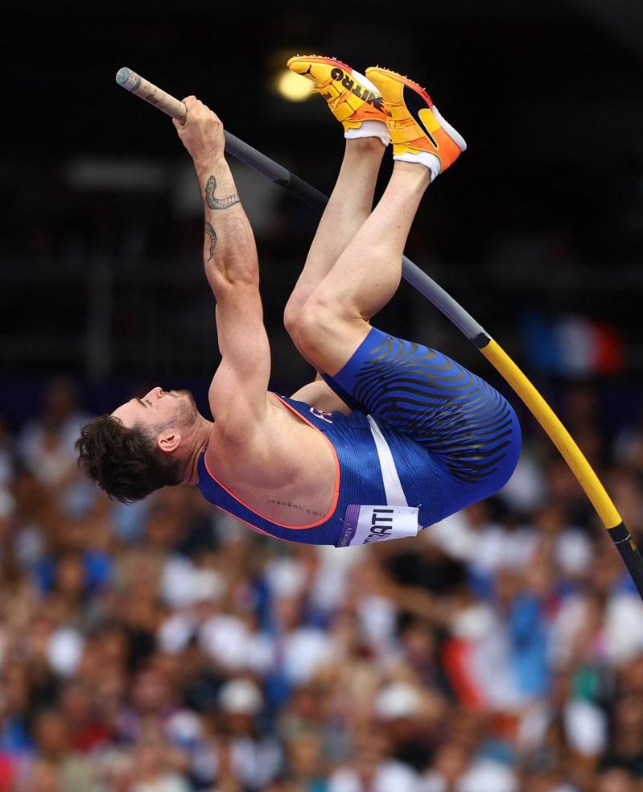
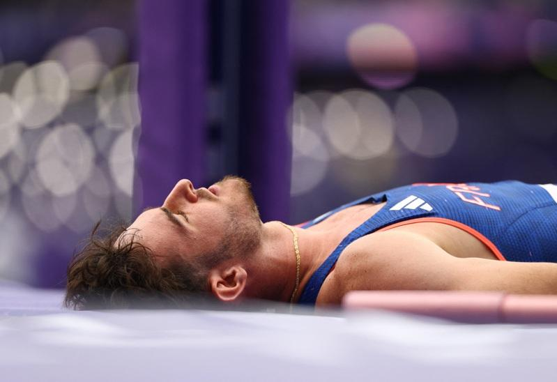

巴黎奥运田径项目3日上演第三日赛事上演了有趣的一幕，法国选手阿米拉蒂 (Anthony Ammirati)因为他胯下一包卡到杆子，最终三跳失败下，总成绩只拿第15名，无缘晋级准决赛。
21岁的阿米拉蒂是法国的前U20世锦赛冠军，身穿蓝色运动服的他，在巴黎奥运前两跳5米40及5米60均一跳通过，不过到5米70的高度时，前两次试跳均失败而回，到第三跳意外地成为网上热话。
从比赛片段见到，阿米拉迪双腿似乎已经成功跨过，但横杆却因为他下面那一包碰到杆子，导致试跳失败。
有网友笑称：「但是他赢得全世界女孩的芳心」、「获得了更大的荣耀」；阿米拉蒂社群下方的留言，满满是法国长棍面包的emoji。
第一次参加奥运的阿米拉蒂结束在家乡的比赛，撑竿跳是他唯一参赛的项目，不过他的「好表现」已经被慢动作拨放到全世界，一夕暴红。


巴黎奥运热话题
- 一岁半开始上中文学校 虎妈养出金牌奥运击剑手
- 男足8强法国淘汰阿根廷引发混战 导火线2年前埋下
- 法国泳坛新星马向本届拥4金：这是完美一周
- 台拳后林郁婷外型遭记者议论 华邮专栏作家叹：已成猎巫行动
- 8月3日赛程 美国男篮对上波多黎各、三组「中国内战」你帮谁加油？